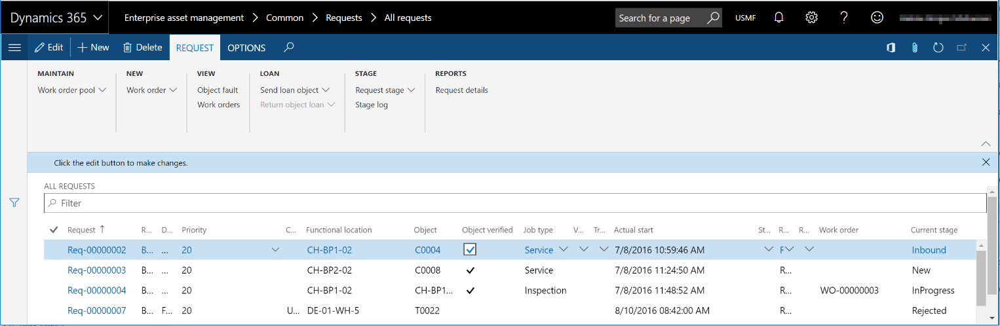
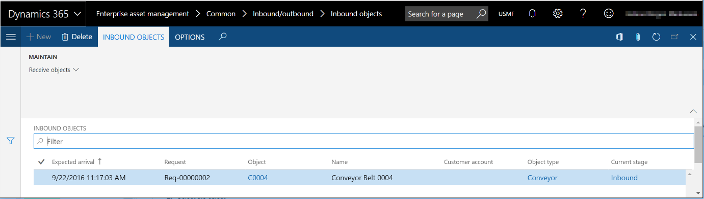

Ein- und ausgehende Anlagen
Important
Dynamics 365 for Finance and Operations hat sich zu speziell entwickelten Anwendungen entwickelt, mit denen Sie bestimmte Geschäftsfunktionen verwalten können. Weitere Informationen zu diesen Änderungen finden Sie im Dynamics 365-Lizenzierungshandbuch.
Wenn Ihr Unternehmen Reparatur- oder Wartungsarbeiten für Anlagen ausführt, die von anderen Standorten oder Kunden entgegen genommen werden, kann Asset Management sowohl eingehende Anlagen nachverfolgen, die auf dem Weg zu Ihrem Unternehmen sind, als auch ausgehenden Anlagen, die zurückgegeben werden.
Note
Wenn Sie Lebenszyklusstatus für ein- und ausgehende Anlagen zum Verwalten von Anlagen verwenden möchten, die empfangen und zurückgegeben werden, müssen Sie Lebenszyklusstatus für Wartungsanforderungen und Lebenszyklusmodelle einrichten, die diese Aktivitäten unterstützen. Weitere Informationen finden Sie unter Wartungsanforderungen.
Die Einrichtung von Asset Management bestimmt, ob Sie mit ein- und ausgehenden Anlagen arbeiten können.
Erfassen von Anlagen als eingehend
- Wählen Sie Anlagenverwaltung > Allgemeines > Wartungsanfragen > Aktive Wartungsanfragen.
- Wählen Sie die Wartungsanfrage aus.
- Wählen Sie Wartungsanforderungsstatus aktualisieren aus.
- Wählen Sie Eingehend aus (oder einen anderen Lebenszyklusstatus, den Sie für eingehende Anlagen erstellt haben), und wählen Sie anschließend OK.

Erfassen von eingehenden Anlagen als empfangen
- Wählen Sie Anlagenverwaltung > Allgemeines > Ein-/ausgehend > Eingehende Anlagen aus.
- Wählen Sie die Anlage oder die Wartungsanfrage aus.
- Wählen Sie Anlagen entgegennehmen aus.
- Geben Sie im Feld Eingegangen das Datum und die Uhrzeit ein. Wählen Sie dann OK aus. Der Datensatz wird von der Listenseite Eingehende Anlagen entfernt.

Erfassen von Anlagen als ausgehend
Wenn Sie den Wartungs- oder Reparaturauftrag erledigt haben, können Sie die Anlage als zurückgegeben erfassen.
- Wählen Sie Anlagenverwaltung > Allgemeines > Wartungsanfragen > Aktive Wartungsanfragen.
- Wählen Sie die Wartungsanfrage aus.
- Wählen Sie Wartungsanforderungsstatus aktualisieren aus.
- Wählen Sie Ausgehend aus (oder einen anderen Lebenszyklusstatus, den Sie für ausgehende Anlagen erstellt haben), und wählen Sie anschließend OK.
Erfassen von ausgehenden Anlagen als geliefert
- Wählen Sie Anlagenverwaltung > Allgemeines > Ein-/ausgehend > Ausgehende Anlagen aus.
- Wählen Sie die Anlage oder die Wartungsanfrage aus.
- Wählen Sie Anlagen liefern aus.
- Geben Sie im Feld Geliefert das Datum und die Uhrzeit ein. Wählen Sie dann OK aus. Der Datensatz wird von der Listenseite Ausgehende Anlagen entfernt.